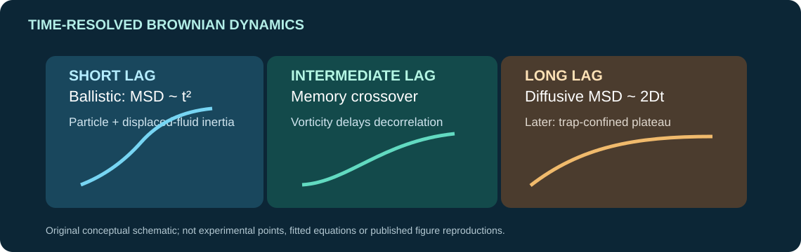
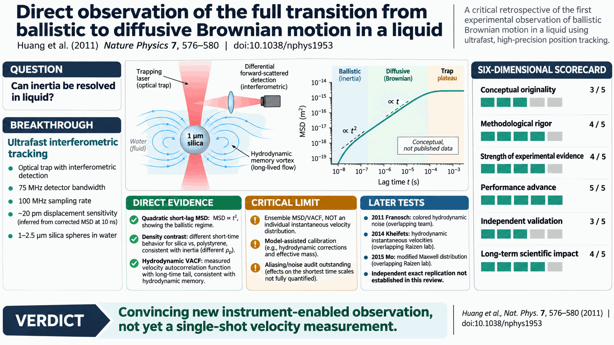

Executive verdict
Verdict: a landmark observation enabled by exceptional position-detection engineering, with important limits to the scope of the 'direct' claim. This work decisively moved experimental Brownian-motion tracking of a single micron-scale sphere in water into the inertial regime. Its particularly compelling evidence is a three-way concurrence: an approximately quadratic short-time mean-square displacement (MSD); a mass-density effect between equal-diameter polystyrene and silica spheres; and a velocity autocorrelation function (VACF) incompatible with a conventional memoryless Langevin treatment but consistent with particle-and-fluid inertia. The enabling achievement was a high-bandwidth optical-interferometric detector, not the discovery of ballistic dynamics or hydrodynamic memory, both theoretically anticipated and partly observed earlier.
The headline limitation: the 2011 study did not record sufficiently smooth, low-noise individual position trajectories to determine an instantaneous velocity distribution. Its MSD and VACF are ensemble/time-averaged statistical estimators, and the underlying calibration invokes the hydrodynamic theory that the data are then said to verify. The same-size/different-density test reduces that circularity but does not eliminate systematic questions about optical response and spectral noise. The paper itself acknowledges that direct Maxwell-distribution measurement remained beyond its apparatus (page 578).
Retrospectively, the short-time inertial regime has stood up: later independent or partially independent measurements of hydrodynamic-memory signatures, together with more decisive same-research-lineage liquid-phase instantaneous-velocity experiments, support the underlying physics. A fully independent, like-for-like reproduction of the entire 2011 10-ns-to-1-ms result, including its precise shortest-lag correction, was not established by the sources inspected here. Overall: strong phenomenon-level credibility; exact-instrument replication and some detector-noise assumptions remain open.
1. Claim hierarchy: observation versus inference
| Principal assertion | Direct measurement and paper location | Epistemic status | Retrospective assessment |
|---|---|---|---|
| Single particle crosses ballistic to diffusive dynamics in liquid | Interferometric lateral position traces; MSD, Fig. 2, p. 577 | Direct time-series observable; ballistic label is a dynamical interpretation | Strong, especially as accompanied by Fig. 3 density control |
| Short-lag MSD tends toward t² | 1 and 2.5 µm silica, Fig. 2; normalization Fig. 3b | Derived correlation statistic with a subtraction of detector noise | Strong qualitative signature; closest-lag magnitude needs an aliasing/noise budget |
| Particle inertia alters motion independent of radius | 2.5 µm silica vs polystyrene, Fig. 3a | Mechanism inferred from density-controlled contrast | Stronger discriminating test than t² alone; residual optical/material differences possible |
| Hydrodynamic memory is quantitatively necessary | VACF versus Clercx–Schram and simple Langevin models, Fig. 4 | Theory comparison, conditional on calibration/model | Strong evidence against memoryless Langevin for these parameters |
| Particle's individual instantaneous speed is measured | Not shown; paper explicitly says individual traces remain insufficient | Not claimed as achieved in the article's careful discussion | First liquid-phase Maxwell-distribution tests appeared later |
| Compressible-fluid acoustic regime verified | No; τc and sub-picometer limits are discussed on p. 579 | Explicit untested prediction | Remains outside the 2011 measurement scope |
Measurement chain: trap a dilute sphere in water → forward laser-scattering interferometry → two fiber-fed photodiodes operated as a balanced position detector → digitize position at 100 MHz → estimate MSD and VACF → compare with hydrodynamic-memory models → infer inertial regimes. The theory enters not only the interpretation but also radius/position-calibration fitting.
2. NABC: Need, Approach, Benefits, Competition
At publication (2011)
Need. Einstein's diffusive description correctly describes long-lag displacements but hides meaningful instantaneous velocity below the particle's momentum-relaxation time. Early work had found hydrodynamic deviations, yet the approximately 100 ns timescale and tens-of-picometer displacements for a 1 µm silica sphere in water made a direct liquid-phase ballistic test difficult [Lukić, Phys. Rev. Lett., 2005; Li, Science, 2010].
Approach. Hold a single bead far from walls in a 1,064 nm, 600 mW optical trap; collect forward interferometric signals with fibers feeding small fast photodiodes; use a 75 MHz nominal detection bandwidth and high-rate digitization; measure MSD and VACF across many time lags [Huang, Nat. Phys., 2011, Methods].
Benefits. A reported MSD noise-subtracted limit of ~0.0005 nm² at roughly 10 ns (an inferred displacement scale of ~20–22 pm), density-sensitive inertial dynamics, and a VACF exposing fluid-memory effects. These are correlation sensitivities, not single-frame, absolute, 20-pm localization accuracy.
Competition. Earlier interferometric particle tracking measured nondiffusive hydrodynamic correlations but did not fully resolve particle ballistic behavior in liquid [Lukić, Phys. Rev. Lett., 2005]. Li and collaborators had directly measured the instantaneous velocity of a trapped sphere in a rarefied gas, where drag is much lower, but this was not an equivalent liquid benchmark [Li, Science, 2010]. Dynamic and diffusing-wave light scattering constrained collective or time-averaged motion at different conditions; none offered this exact single-bead liquid ballistic measurement with the same optical geometry.
Retrospective (2026)
Need. The frontier has shifted from demonstrating ballistic scaling to resolving non-Markovian forces, near-wall hydrodynamics, conditioned velocity trajectories, liquid compressibility and high-frequency rheological response.
Approach/benefits. Inertial particle tracking is now a methodological lineage encompassing direct liquid-phase velocity distributions, calibrated high-frequency optical tweezers and conditional trajectories. Results in 2014–2015 achieved modified equipartition/Maxwell statistics in liquid; 2026 work probed conditioned trajectories with t^(5/2) MSD scaling [Kheifets, Science, 2014; Mo, Opt. Express, 2015; Boynewicz, Sci. Adv., 2026].
Competition. For routine viscosity or low-frequency microrheology, standard bead-tracking and power-spectrum approaches are simpler. High-bandwidth back-focal-plane interferometry remains distinctive when nano/microsecond fluid inertia is the target, but it requires specialized detectors, optics, and careful alias/noise calibration. The 2011 instrument is a compelling research platform, not a demonstrated commercial particle sensor.
3. Conceptual breakthrough and enabling technology
Breakthrough class: enabling experimental capability and stringent physical-theory test, not a new fundamental explanation. Langevin's particle-inertia description was established in 1908; hydrodynamic memory and non-exponential VACFs were developed by Vladimirsky, Hinch and later Clercx–Schram [Hinch, J. Fluid Mech., 1975; Clercx, Phys. Rev. A, 1992]. The 2005 predecessor already recorded nondiffusive motion, and the 2010 gas-phase experiment verified velocity equipartition under easier dynamical conditions.
The essential innovation was the combination of optical-trap interferometry, a fiber-coupled fast balanced detector, aggressive high-rate sampling, and careful averaged correlation statistics. No single element independently proved ballistic behavior: the 2008 detector-development work was a direct technological precursor [Chavez, Rev. Sci. Instrum., 2008]. Particle selection (silica, polystyrene, melamine resin) was not a novel material discovery but created discriminating checks across mass and signal strength. The scientific gain came from integrating detection and experimental design to bridge a bandwidth-versus-displacement gap.
Crucially, the full physical description is not an abrupt two-state switch. Hydrodynamic memory produces a continuous crossover between m*-controlled t² and Einstein's 2Dt, and trapping eventually causes a plateau. In the earliest accessible regime, the 'effective' inertial mass includes half the displaced liquid mass for an incompressible spherical-flow model.

4. Figure-by-figure experimental critique
5. Quantitative audit and physical sanity checks
For a spherical particle of radius r, particle density ρp, fluid density ρf, and dynamic viscosity η:
- Stokes friction γ = 6πηr.
- Particle mass m = (4π/3)ρp r³; displaced fluid mass mf = (4π/3)ρf r³.
- Incompressible-flow effective mass m* = m + ½mf.
- Particle momentum-relaxation time τp = m/γ = 2ρp r²/(9η).
- Hydrodynamic fluid-vorticity time τf = ρf r²/η, so τf/τp = 9ρf/(2ρp).
- Ballistic one-axis MSD ≈ (kBT/m*)t²; late free one-axis MSD = 2Dt with D = kBT/γ.
Independent arithmetic, assuming the article's values T = 296 K, η = 10⁻³ Pa s, ρf = 1000 kg m⁻³ and silica ρp = 1960 kg m⁻³:
| Audited parameter | 1.0 µm silica sphere | 2.5 µm silica sphere |
|---|---|---|
| Radius r | 0.50 µm | 1.25 µm |
| Particle mass m | 1.03 × 10⁻¹⁵ kg | 1.60 × 10⁻¹⁴ kg |
| Effective mass m* | 1.29 × 10⁻¹⁵ kg | 2.01 × 10⁻¹⁴ kg |
| Friction γ | 9.42 × 10⁻⁹ kg s⁻¹ | 2.36 × 10⁻⁸ kg s⁻¹ |
| τp = m/γ | 0.109 µs | 0.681 µs |
| τf = r²ρf/η | 0.250 µs | 1.563 µs |
| Ballistic rms speed in one axis, √(kBT/m*) | 1.78 mm s⁻¹ | 0.451 mm s⁻¹ |
| Diffusion D = kBT/γ | 0.434 µm² s⁻¹ | 0.173 µm² s⁻¹ |
At t = 10 ns, the ideal 1.0 µm silica ballistic formula gives MSD ≈ 0.000317 nm² and root-MSD ≈ 17.8 pm, consistent in order of magnitude with the article's quoted ~0.0005 nm² and ~20 pm figure. This is a scale check, not an independently reconstructed experimental noise floor. For 2.5 µm particles the predicted τp ≈ 0.68 µs and τf ≈ 1.56 µs match the labels in Fig. 3.
For equal-radius silica and polystyrene, the strict asymptotic effective-mass ratio msilica/mPS = (1.96 + 0.50)/(1.05 + 0.50) ≈ 1.59, under the incompressible hydrodynamic prescription. The paper's ~2× separation at the finite lag t ≈ 0.07τf is not identical to that asymptote, so it must be compared with the complete time-dependent model rather than treated as a direct mass-ratio measurement.
Bandwidth caveat: Sampling at 100 MHz yields a 10 ns sample interval and a Nyquist frequency of 50 MHz. A 75 MHz analog bandwidth, in isolation, does not guarantee alias-free 100 MHz digitization. The 2011 data may nonetheless be accurate, but the main text does not provide enough electronics/noise detail to audit that step independently. Similarly, a quoted ~20 pm root-MSD at 10 ns reflects a corrected statistical displacement estimator, not necessarily a 20 pm absolute instantaneous position measurement.
6. History: precursors, corroboration and extensions
| Year | Primary source | Relationship to 2011 claim | Independence and inference |
|---|---|---|---|
| 1975 | Hinch, J. Fluid Mech. | Predicts particle-fluid inertial memory and nontrivial VACF | Theoretical precursor, not experimental validation |
| 1992 | Clercx & Schram, Phys. Rev. A | Harmonic-trap hydrodynamic treatment | Model underlying the 2011 fit |
| 2005 | Lukić, Phys. Rev. Lett. | Earlier liquid nondiffusive regime; partial inertial signal | Substantial investigator overlap; not first fully ballistic test |
| 2010 | Li, Science | Direct instantaneous velocity of optically trapped sphere in gas | Related team; distinct physical medium |
| 2011 | Huang, Nat. Phys. | Short-time liquid MSD + VACF + density-control demonstration | Anchor experiment |
| 2011 | Franosch, Nature | Hydrodynamic-memory resonance / colored thermal-noise spectrum | Separate experiment, overlapping Sylvia Jeney authorship; corroborates memory, not identical 10 ns MSD |
| 2012 | Grimm, Phys. Rev. E | High-bandwidth calibration using memory-aware MSD and VACF | Overlapping Jeney group; methodological extension |
| 2014 | Kheifets, Science | Hydrodynamic instantaneous velocity and anticorrelated thermal force in liquid | Raizen lineage; stronger direct measurement, not independent replication |
| 2015 | Mo, Opt. Express | Modified Maxwell–Boltzmann velocity distribution in liquid | Raizen lineage; validates key prediction with higher directness |
| 2015 | Mo, Phys. Rev. E | Ballistic Brownian dynamics near a wall | Same lineage; extension to confined geometry |
| 2019 | Paul, Soft Matter | Independently examines hydrodynamically coupled non-Markovian motion in optical traps | Different lab, different two-particle/time-scale regime; not like-for-like replication |
| 2026 | Boynewicz, Sci. Adv. | Conditional-velocity selection reveals t^(5/2) super-ballistic fluctuations | Raizen lineage, different statistical ensemble; a refinement, not contradiction |
Survival matrix. (1) A short-lag t² regime for ordinary equilibrium averages: supported by later tests. (2) Liquid added-mass and hydrodynamic memory: strongly supported at the phenomenon level by distinct experimental signatures. (3) The exact 2011 20 pm / 10 ns estimate and full transfer calibration: not independently re-audited. (4) Individual instantaneous velocity measured in 2011: not done, later demonstrated elsewhere. (5) Compressibility-driven oscillatory sub-nanosecond VACF: unresolved in the reviewed 2011 data.
Correction and replication search: The DOI and publication record were verified against the publisher. A scite forward-citation screen and targeted searches of primary papers through November 2026 did not establish a directly matching, independently performed, full-regime reproduction. No formal correction/retraction was found in the inspected metadata, which is not proof none exists. Scite's indexed metadata on 4 November 2026 reported 459 citing publications and 388 classified citation statements (14 supportive, 0 contrasting, 371 mentioning; remainder unclassified); these classifications are database-specific and do not establish validity or independence.
7. Long-term influence and scientific legacy
The lasting achievement is methodological and conceptual access: a previously impractical window of liquid-phase dynamics became observable in an individual colloidal probe. The experiment helped push precision optical particle tracking from a diffusion-only description toward non-Markovian fluid-particle dynamics. Later work made the instantaneous-velocity distribution measurable and explored colored thermal noise, wall influence, and conditional initial-velocity ensembles. It did not demonstrate a deployable sensor, scalable metrology product or an experimentally verified compressible-flow acoustic crossover. Its importance should not be inflated by counting general citations about Brownian motion as precise replications of its figures.
A major scientific lesson is the dependence of 'velocity' on the measurement timescale and the coupled fluid mass: at accessible times the liquid co-moves with the bead, and the m* prediction matters; at still faster acoustic times, incompressibility and hence the simple added-mass picture can fail. The 2011 paper articulated that limitation rather than hiding it.
Confidence: High
Confidence: Moderate
Confidence: High
Confidence: High
Confidence: Low–moderate
Confidence: Moderate
8. Six-dimensional scorecard (separate scores; no average)
| Dimension | Score | Confidence | Rationale |
|---|---|---|---|
| Conceptual originality | 3 / 5 | High | A major new observation, but ballistic scaling, added mass and memory were predicted; 2005 liquid precursors existed. |
| Methodological rigor | 4 / 5 | Moderate | Multiple particle types, blank noise correction, blocking errors, trap calibration; anti-alias and theory-assisted calibration underdocumented. |
| Strength of experimental evidence | 4 / 5 | High | t² slope, density-dependent contrast and model-discriminating VACF jointly support inertia. |
| Performance advance | 5 / 5 | High | First convincing single-sphere liquid ballistic regime with ~10 ns correlation access. |
| Independent validation | 3 / 5 | Low–moderate | Distinct hydrodynamic signatures corroborated, but key follow-ups overlap investigator lineage; exact independent duplication not verified. |
| Long-term scientific impact | 4 / 5 | Moderate | Influential high-bandwidth tracking and non-Markovian microrheology research; no demonstrated industrial standard. |
9. Ten demanding discussion questions and discriminating tests
Q1. Could aliasing bias the 10 ns MSD? The analog 75 MHz detector and 100 MHz digitization have different limiting frequencies. Resolve with: measured frequency transfer and anti-alias response, 200+ MHz cross-sampling and raw noise spectra.
Q2. Does bead-free background subtraction remove bead-dependent optical noise? Scattering, relative intensity noise and intensity-to-position conversion can be bead-specific. Resolve with: multi-power, multi-photodiode simultaneous noise characterization and control beads with immobilized position.
Q3. Are calibration and theoretical confirmation independent? Hinch dynamics are used to fit radius and detector scale before theory–data agreement is advertised. Resolve with: independently calibrated displacements, SEM diameter distributions and viscosity/temperature checks, fitting no free scale to the short-lag MSD.
Q4. Does the density test isolate mass alone? Silica and polystyrene have different refractive index, optical scattering and size dispersity. Resolve with: independent optical gain and geometric measurements, plus density-matched/isorefractive comparisons where feasible.
Q5. What is the model-free t² exponent and credible lag range? A plotted line of slope 2 is not a confidence interval. Resolve with: bootstrap/block-correlated local-slope confidence bands and exact noise-subtraction sensitivity.
Q6. Is the VACF evidence independent of the MSD? Both originate from the same signals, differentiation, smoothing and hydrodynamic calibration. Resolve with: an orthogonal interferometer or detection axis and spectral-domain FDT prediction fixed a priori.
Q7. What portion of the t^(-3/2) long-time tail is truly resolved? The trap modifies the correlations and creates anti-correlation. Resolve with: multiple stiffnesses, explicit exponent fits in a validated free-particle window and comparison with no-trap simulations.
Q8. How much do wall hydrodynamics and laser heating matter? The article places beads >10 diameters from a coverslip and assumes near-room-temperature water properties. Resolve with: measured bead axial position, in situ thermometry, wall-distance scan, and laser-power extrapolation.
Q9. What physical feature would distinguish incompressible added mass from a finite-speed acoustic response? The 2011 analysis cannot reach τc≈0.3 ns for a 1 µm bead. Resolve with: sub-nanosecond, picometer-level dynamic tracking or a complementary high-frequency acoustic scattering measurement and a compressible-fluid model.
Q10. Can an unrelated laboratory reproduce the same MSD and VACF without using the original theory for calibration? Shared-lineage papers do not suffice as full external validation. Resolve with: preregistered cross-laboratory raw data, traceable photodiode response, bead metrology, and deposited uncertainty-analysis code.
10. Final synthesis
Strongest defense: three different experimental signatures support the inertial crossover, with sample-density discrimination and VACF model comparison extending beyond visual recognition of a t² slope. This was a genuine and difficult precision-measurement advance.
Strongest criticism: the deepest short-time claims depend on corrected correlation estimators whose noise spectral response and calibration are incompletely independent of the theory being tested. The word 'direct' is defensible for observed dynamics but must not be read as a direct Maxwell-distributed velocity measurement.
Survived: equilibrium short-time ballistic scaling, the importance of fluid added mass and hydrodynamic memory, and the availability of particle-scale liquid inertial metrology. Not established by this paper: instantaneous velocity histograms, compressible-fluid τc physics, a universal sensor platform, or a fully independent exact replication.
Most decisive remaining experiment: have an unrelated laboratory make a traceable, broadband, anti-alias-verified measurement across multiple known-density, near-equal-radius beads and fluids, jointly publishing raw short-lag MSD, frequency-domain response and VACF, with independent calibration and preregistered residual tests. A faithful reproduction would elevate independent-validation confidence; a systematic density-independent discrepancy at the shortest lags would force revision of the present quantitative claim.
Final judgement: Huang et al. (2011) remains an important and credible landmark in experimental statistical mechanics because it resolved a previously inaccessible liquid-phase inertial regime; its cleanest legacy is the verified capability to observe that regime, with the fine-grained velocity distribution and detector/systematic questions left for later experiments.
References and evidence access
- Huang, Nat. Phys., 2011. Anchor paper, vol. 7, pp. 576–580; provided five-page PDF, figures 1–4 and Methods inspected.
- Lukić, Phys. Rev. Lett., 2005. Earlier liquid hydrodynamic fluctuations.
- Hinch, J. Fluid Mech., 1975. Fluid-inertia theory.
- Clercx and Schram, Phys. Rev. A, 1992. Brownian dynamics in harmonic potentials.
- Chavez, Rev. Sci. Instrum., 2008. Detector-development precursor.
- Li, Science, 2010. Instantaneous velocity of trapped particle in gas.
- Franosch, Nature, 2011. Hydrodynamic memory resonances.
- Grimm, Phys. Rev. E, 2012. Bandwidth and calibration extension.
- Kheifets, Science, 2014. Liquid instantaneous velocities and force correlations.
- Mo, Opt. Express, 2015. Liquid velocity distribution and modified equipartition.
- Mo, Phys. Rev. E, 2015. Wall-modified hydrodynamic correlations.
- Paul, Soft Matter, 2019. Independent two-particle memory dynamics.
- Boynewicz, Sci. Adv., 2026. Conditioned super-ballistic Brownian behavior.
Source/access limitations (4 November 2026): Original five-page publisher PDF was supplied and all four figures examined. No standalone supplementary-information file was provided with the source. Primary follow-ups were checked using publisher, PubMed and open full-text excerpts; their complete raw datasets were not reanalyzed. Some primary articles were abstract-only. Forward citation graph coverage is incomplete by construction; the inspected sample includes citing mentions and is not a systematic census of replication attempts. No pixel-level data extraction or independent redigitization was performed. Theory checks are analytic back-of-envelope calculations, not reproductions of the authors' fits. The original article's Fig. 4 caption and Methods appear inconsistent on 80 ms versus 40 ms acquisition; this has not been reconciled against lab records.
One-page scientific infographic

Original explanatory artwork, not a reproduction of journal figures. Open the full-resolution PNG.